Pokédex / #279
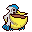
Pelipper #279
WaterFlying
It dips its large bill in the sea, then scoops up numerous prey along with water.
Generation 3 · Hoenn
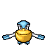
Stats
| Attack | 50 | |
|---|---|---|
| Defense | 100 | |
| Sp. Atk | 95 | |
| Sp. Def | 70 |
In the wild
| Wild level | 40–50 |
|---|---|
| HP | 60 |
| Experience | 10 |
| Egg groups | Flying, Water 1 |
Evolution
- Evolves from Wingull at level 25.
Moves
| Level | Move | Type | Category | Power | Energy | Cooldown | Effect | |
|---|---|---|---|---|---|---|---|---|
| 1 | Tackle | Normal | Physical | 15 | 15 | 1s | Tackle is one of the most common and basic moves a Pokemon learns. It deals damage with no additional effects. | |
| 1 | Protect | Normal | Status | – | 70 | 60s | Protect raises the user's Defense by two stages. | |
| 1 | Hurricane | Flying | Special | 110 | 120 | 23s | Hurricane deals damage and has a 30% chance of confusing the target. | |
| 1 | Hydro Pump | Water | Special | 110 | 120 | 27s | Hydro Pump inflicts damage and has no secondary effect. | |
| 1 | Tailwind | Flying | Status | – | 80 | 40s | Tailwind doubles the speed of all Pokemon in the user's party for 10 seconds. | |
| 1 | Growl | Normal | Status | – | 60 | 60s | The user growls in a cute way, making the foe lower its ATTACK. stat. | |
| 1 | Water Gun | Water | Special | 40 | 45 | 9s | Water Gun inflicts damage and has no secondary effect. | |
| 1 | 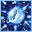 | Water Sport | Water | Status | – | 60 | 60s | Water Sport increases user ATTACK and DEFENSE stats. |
| 1 | Wing Attack | Flying | Physical | 60 | 70 | 14s | Wing Attack inflicts damage and has no secondary effect. | |
| 5 | 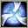 | Supersonic | Normal | Status | – | 20 | 14s | Supersonic causes the target to become confused. |
| 12 | Mist | Ice | Status | – | 120 | 90s | The user cloaks itself and its allies in a white mist that prevents any of their stats from being lowered. | |
| 15 | Water Pulse | Water | Special | 60 | 65 | 9s | Water Pulse deals damage and has a 20% chance of confusing the target. | |
| 19 | 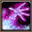 | Payback | – | Physical | – | 100 | 90s | Any move is reflected back to the attacker. |
| 19 | Quick Attack | Normal | Physical | 40 | 40 | 6s | Quick Attack deals damage and has no secondary effect. | |
| 22 | Brine | Water | Special | 65 | 80 | 15s | Brine inflicts damage, and its power doubles to 130 when the target is at or below 50% health. | |
| 22 | 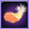 | Air Cutter | Flying | Special | 60 | 70 | 13s | Air Cutter deals damage and has an increased critical hit ratio. |
| 26 | 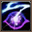 | Pursuit | Dark | Physical | 40 | 40 | 6s | Pursuit deals damage and has no secondary effect. |
| 29 | Aerial Ace | Flying | Physical | 60 | 60 | 14s | Aerial Ace deals damage and ignores changes to the Accuracy and Evasion stats. | |
| 33 | Stockpile | Normal | Status | – | 90 | 10s | Raises the user's Defense and Special Defense by one stage and charges up power for use with companion moves Spit Up or Swallow. | |
| 33 | Swallow | Normal | Status | – | 90 | 120s | Swallow recovers a varying amount of HP depending on how many times the user has used Stockpile. It recovers 25%, 50% or 100% of the user's maximum HP if the user stockpiled one, two or three times respectively. | |
| 33 | Spit Up | Normal | Special | 100 | 150 | 30s | Spit Up deals varying damage depending on how many times the user used Stockpile. The base power is 100, 200 or 300 if the user stockpiled one, two or three times respectively. | |
| 36 | Agility | Normal | Status | – | 80 | 20s | Agility raises the user's Speed by two stages. | |
| 39 | Roost | Flying | Status | – | 90 | 120s | User recovers half of its max HP. Flying types temporarily lose Ground type immunity. | |
| 40 | Air Slash | Flying | Special | 75 | 80 | 17s | Air Slash deals damage and has a 30% chance of causing the target to flinch. |
Field abilities
FlySurfFind
Special abilities
DrizzleKeen Eye
Egg moves
Technical machines
Aerial AceBlizzardDouble TeamHailHyper BeamIce BeamProtectRain DanceRestShock WaveSteel WingSubstituteToxic
Drops
| Item | Amount | Chance | |
|---|---|---|---|
| water gem | 1–4 | 97.2% | |
| bunch of wheat | 1–3 | 72.9% | |
| bunch of sugar cane | 1 | 58.3% | |
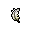 | light feather | 1 | 58.3% |
| feather | 1 | 32.4% | |
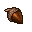 | acorn | 1 | 19.4% |
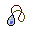 | water pendant | 1 | 18.2% |
| downy feather | 1 | 14.6% | |
| blue sphere | 1 | 9.72% | |
| colourful feather | 1 | 5.83% | |
| royal feather | 1 | 1.94% | |
| exotic feather | 1 | 0.972% | |
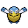 | pelipper doll | 1 | 0.1% |
| Splash Plate | 1 | 0.025% | |
| Sky Plate | 1 | 0.025% | |
| held sharp beak | 1 | 0.01% | |
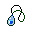 | held mystic water | 1 | 0.01% |
| TM 12 | 1 | 0.005% | |
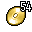 | TM 54 | 1 | 0.005% |